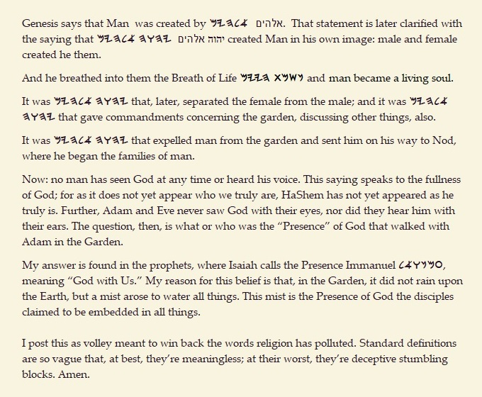

In the Garden with God |
||
| The "God" known by Adam and Eve. Hear, Yisroel! YHWH our Gods is one YHWH. We conflate YHWH Elohenu as a singularity, whereas (he) is a multi-dimensional Presence with many faces, as seen from the perspective of Man. YHWH Elohenu is an indivisible consortium that manifests as One in all respects. That's my out-on-a-limb-with-a-chainsaw opinion. | ||
|  | ||
|
site |
Media Menu |
book |